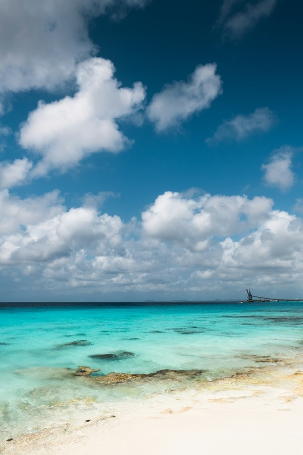

Golfcart 2-Seater
The nimble one: two seats, easy parking, perfect for Kralendijk and the boulevard.

Plan your trip
Here's the short version: Bonaire has no public bus system to rely on, taxis are for airport runs and dinners out, and almost everything worth seeing is spread along 35 kilometres of coast road. Most visitors rent something with wheels — and for a lot of them, that something is the island classic: a double-cab pickup truck with dive tanks rattling in the bed.
| Option | Best for | The catch |
|---|---|---|
| Rental car / pickup | Divers, families, Washington-Slagbaai, going everywhere | Book early in high season; you'll want it most days |
| Golf cart | Kralendijk, the flat south loop, cruise days | Slow and open — not for the north or rough roads |
| Scooter / bicycle | Short hops, budget travellers | Heat and steady trade winds wear you down over distance |
| Taxi | Airport transfers, dinner in town | No meters — agree the fare first; not practical for touring |
| Public bus | — | There's no public bus system to rely on. Plan as if it doesn't exist |
Rent-a-pickup is a Bonaire institution for good reasons. Tanks and wet dive gear go in the open bed instead of soaking your seats, the higher clearance handles the island's many unpaved roads, and it's the only sensible vehicle for Washington-Slagbaai National Park, where a normal sedan simply isn't suitable. Even non-divers end up glad of the clearance on the tracks to the quieter snorkel entries.
If you're not diving and plan to stay on paved roads, a small car does the job for less. Either way, book ahead for mid-December–April — the fleet is finite and it goes.
For Kralendijk and the flat southern half of the island, a golf cart is a genuinely fun way to travel — open air, easy parking, and a natural pace for the salt pans, slave huts and flamingo viewpoints of the south loop. The local specialist is Golfcart Rental Bonaire: two- and four-seater carts (including a luxury four-seater), rentals from around $45 a day, day packages for cruise visitors, and — the charmer of the fleet — the Fiat Topolino EV, a tiny 100% electric two-seater with enough range for the whole south loop. Book online; carts go fast on ship days. Know the limits: carts are slow, exposed to sun and wind, and not the tool for the island's rougher northern roads.
The nimble one: two seats, easy parking, perfect for Kralendijk and the boulevard.
Room for the whole crew on the south loop; a luxury 4-seater is available too.
The charmer of the fleet: 100% electric, doors optional, enough range for the whole south loop.
Prefer something with doors and a story? There's a self-drive Moke option — book the vehicle, get a route, and do the island's highlights in an open-sided icon:
Driving here is easy and low-stress. You drive on the right, and there is not a single traffic light on the entire island — junctions run on roundabouts, right-of-way and general politeness. The real hazards are four-legged: goats and donkeys wander onto roads everywhere, especially outside town and around dawn and dusk, so keep your speed honest.
Expect unpaved stretches once you leave the main coastal roads. They're mostly fine at careful speeds, but this is where the pickup earns its keep. Fill up in or near Kralendijk before a long day out — distances are short, but fuel stops are not on every corner.
Not everyone wants to be behind the wheel, and a local guide adds a layer no rental comes with — the history of the slave huts, where the flamingos are feeding that week, which viewpoint is worth the stop. These guided island tours cover the ground properly:
For most visitors, yes — there's no public bus system to rely on and the island's sights are spread out. The exceptions: cruise visitors on a short call, and travellers staying in Kralendijk who plan to do everything by boat tour and guided trip.
Divers. Wet gear and tanks travel in the open bed, and the clearance handles unpaved roads and Washington-Slagbaai, where normal sedans aren't suitable. It's the island's all-purpose vehicle.
At dive and snorkel sites, yes — empty and unlocked is the local custom. Petty theft from parked vehicles happens, and an unlocked car with nothing in it loses nothing, while a locked one can lose a window. Take valuables with you or leave them at your accommodation.
No — there's no meter culture. Agree the fare with the driver before you set off. Taxis work fine for airport transfers and evenings out, but they're not a practical way to tour the island.
Not advisable — the park's driving routes are rough and a high-clearance vehicle is strongly recommended; normal sedans aren't suitable. Rent a pickup or SUV, or join a guided park tour instead.
Wheels decided? Now pick your base in where to stay, budget the trip with the money guide, or point the truck north with our Washington-Slagbaai guide.